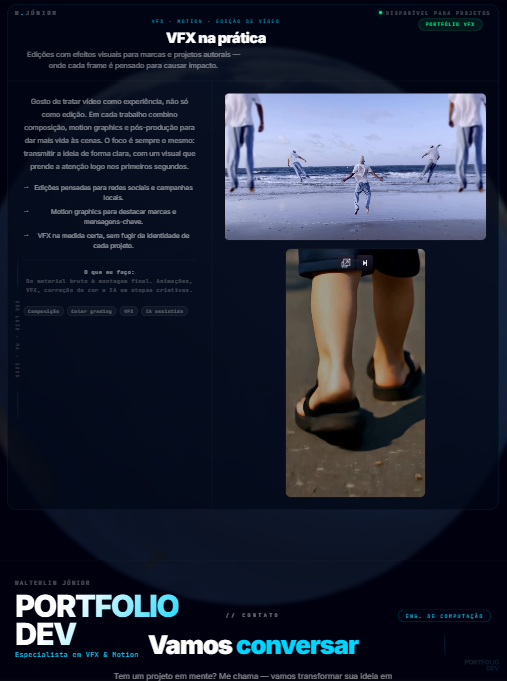
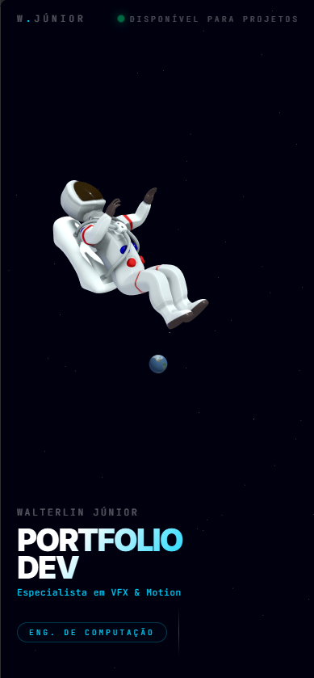
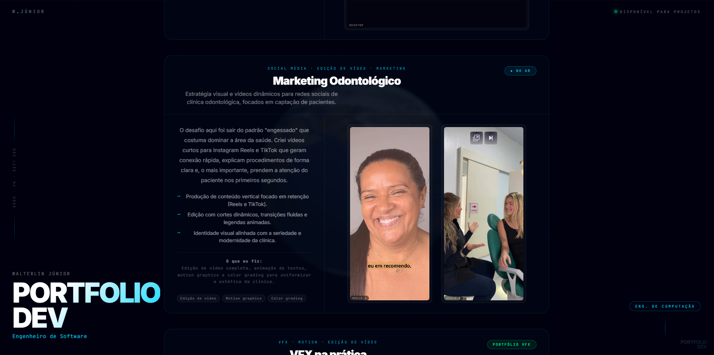
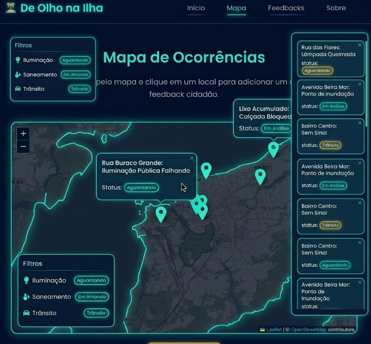
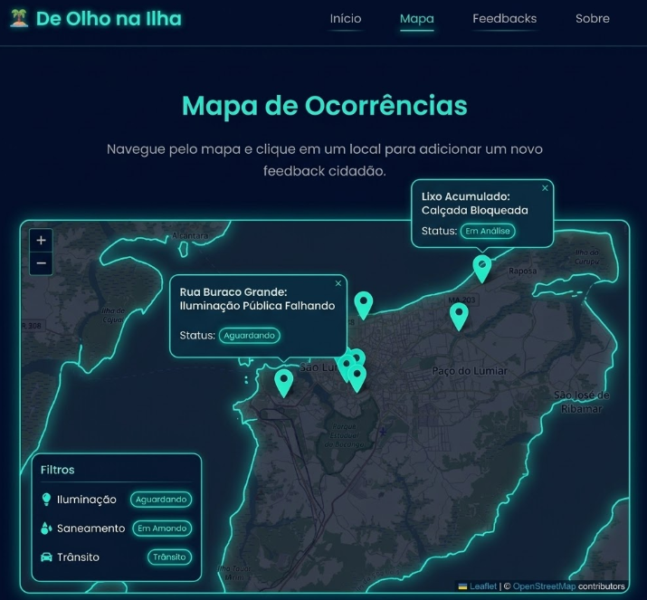
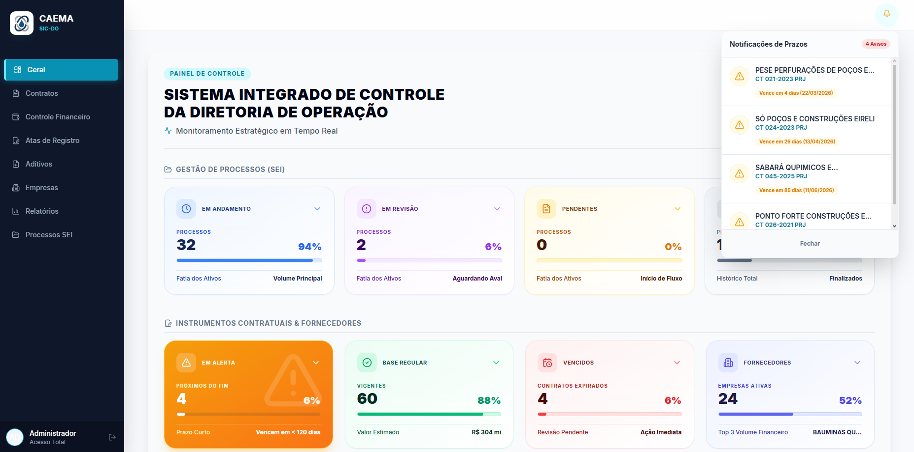
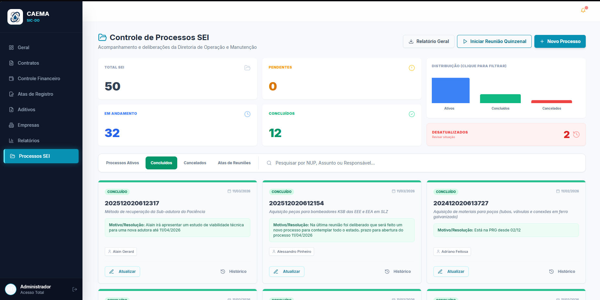

// o que eu faço
Minhas competências
Desenvolvo soluções completas — do código ao resultado visual — usando tecnologia e IA para entregar mais rápido e melhor.
Engenharia de Software
Sites, apps mobile e sistemas completos para lojas, projetos e empresas. Do protótipo ao deploy, com foco em performance e experiência.
Web · Mobile · SistemasVFX & Motion
Edições com efeitos visuais e motion graphics para marcas, lojas e criadores. Do conceito ao render final, com atenção a cada detalhe.
VFX · Motion · ComposiçãoIA Aplicada
Integro inteligência artificial em todos os projetos. Automação, geração de conteúdo, análise — IA como ferramenta real, não palavra-chave.
LLMs · Automação · Produção// projetos
Trabalhos em destaque
Cada projeto aqui resolveu um problema real — seja para uma empresa, para a cidade ou para contar uma história.
Portfolio Dev ← este site
Um portfólio que você não só vê — você navega por dentro. Astronauta, Terra, espaço em tempo real.
Em vez de criar "mais um site de portfólio", decidi transformar minha apresentação profissional em uma experiência espacial. Quem entra aqui encontra um astronauta em queda livre. Conforme desce a página, a Terra se aproxima ao fundo — como se a câmera estivesse viajando pelo espaço junto com você. Você está vivendo esse projeto agora mesmo.
- Primeira impressão forte, diferente de qualquer portfólio convencional.
- Conta uma história visual enquanto você navega.
- Mostra como uno código, 3D e design em um único projeto.
Modelagem 3D no Blender, integração Three.js, efeitos de scroll, toda a interface e narrativa. IA como parceira em todo o processo.



De Olho na Ilha
Mapa colaborativo onde moradores de São Luís apontam problemas da cidade e ajudam a cobrar soluções.
Nasceu dentro da universidade com um objetivo simples: dar voz a quem mora em São Luís. Qualquer pessoa pode abrir o mapa, marcar exatamente onde está o problema — um buraco na rua, uma luz queimada, um ponto inseguro — e registrar um relato. Tudo aparece organizado por categoria, criando uma visão clara da cidade.
- Reúne num só mapa o que antes ficava espalhado em grupos e redes sociais.
- Mostra padrões: quais bairros concentram mais problemas e de que tipo.
- Cria uma ponte visual entre quem reclama e quem pode resolver.
Idealizei, desenhei o fluxo e desenvolvi em Java com integração de mapa interativo. Usei IA (Gemini) como apoio no desenvolvimento.


SIC-DO
Sistema que substituiu planilhas por uma plataforma completa de gestão para a Diretoria de Operação da CAEMA.
A Diretoria de Operação da CAEMA controlava contratos importantes usando basicamente planilhas. Prazos se perdiam, informações ficavam espalhadas. Me chamaram para mudar isso. O SIC-DO centraliza contratos, finanças, processos e geração de atas em um único sistema pensado para o dia a dia da equipe.
- Elimina a dependência de planilhas para controle de contratos e finanças.
- Gera atas de reunião dentro do próprio sistema.
- Aumenta a segurança dos dados e facilita qualquer consulta.
Desenvolvimento completo em TypeScript com base de dados no Supabase. Do design das telas até toda a lógica de funcionamento.


Marketing Odontológico
Estratégia visual e vídeos dinâmicos para redes sociais de clínica odontológica, focados em captação de pacientes.
O desafio aqui foi sair do padrão "engessado" que costuma dominar a área da saúde. Criei vídeos curtos para Instagram Reels e TikTok que geram conexão rápida, explicam procedimentos de forma clara e, o mais importante, prendem a atenção do paciente nos primeiros segundos.
- Produção de conteúdo vertical focado em retenção (Reels e TikTok).
- Edição com cortes dinâmicos, transições fluidas e legendas animadas.
- Identidade visual alinhada com a seriedade e modernidade da clínica.
Edição de vídeo completa, animação de textos, motion graphics e color grading para uniformizar a estética da clínica.
VFX na prática
Edições com efeitos visuais para marcas e projetos autorais — onde cada frame é pensado para causar impacto.
Gosto de tratar vídeo como experiência, não só como edição. Em cada trabalho combino composição, motion graphics e pós-produção para dar mais vida às cenas. O foco é sempre o mesmo: transmitir a ideia de forma clara, com um visual que prende a atenção logo nos primeiros segundos.
- Edições pensadas para redes sociais e campanhas locais.
- Motion graphics para destacar marcas e mensagens-chave.
- VFX na medida certa, sem fugir da identidade de cada projeto.
Do material bruto à montagem final. Animações, VFX, correção de cor e IA em etapas criativas.
// contato
Vamos conversar
Tem um projeto em mente? Me chama — vamos transformar sua ideia em realidade.